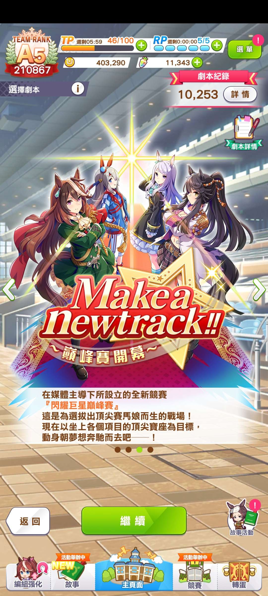
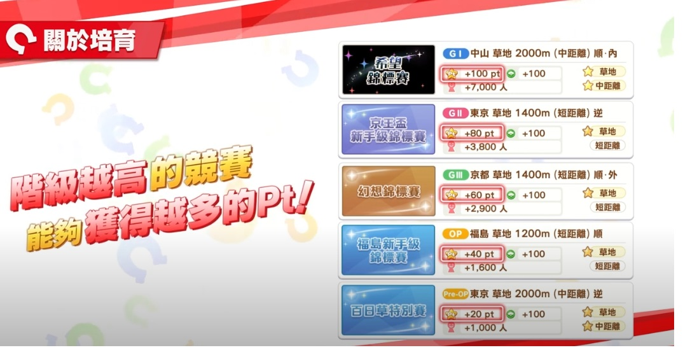
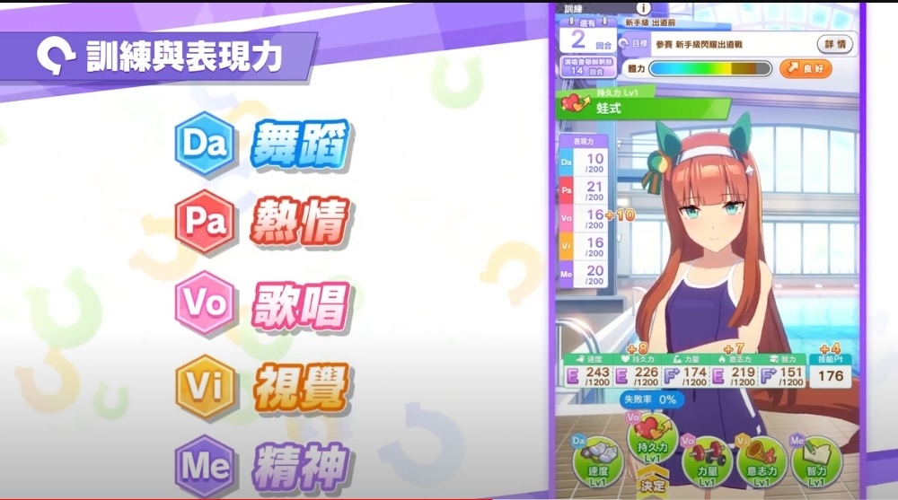
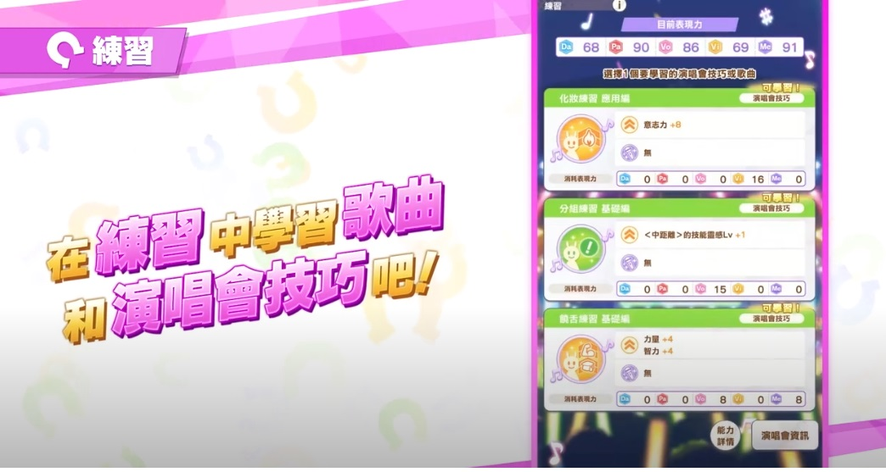
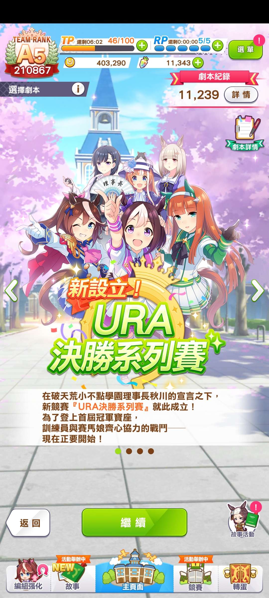
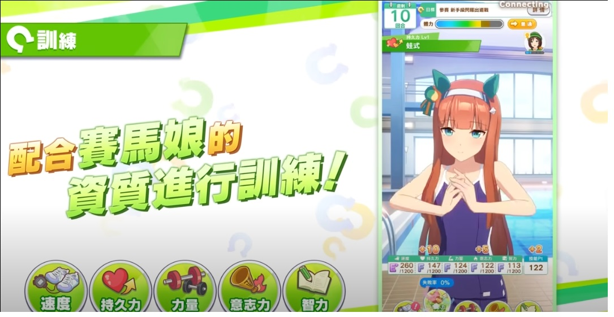
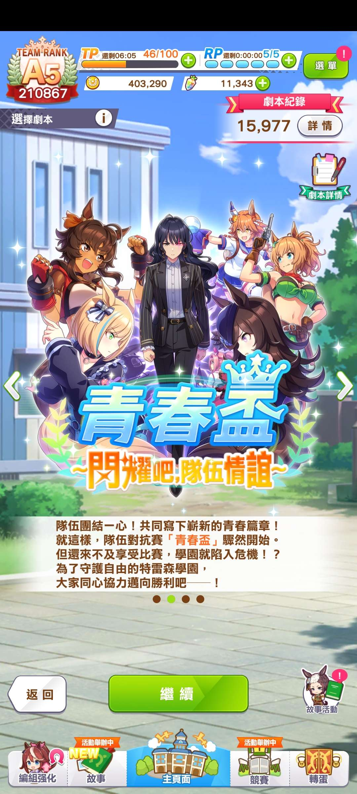
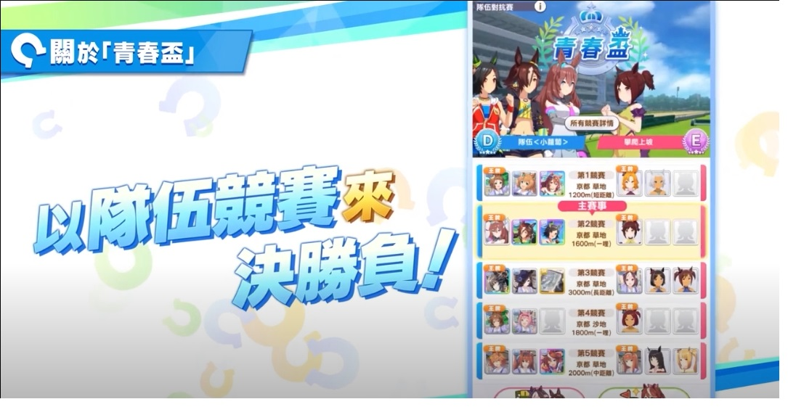
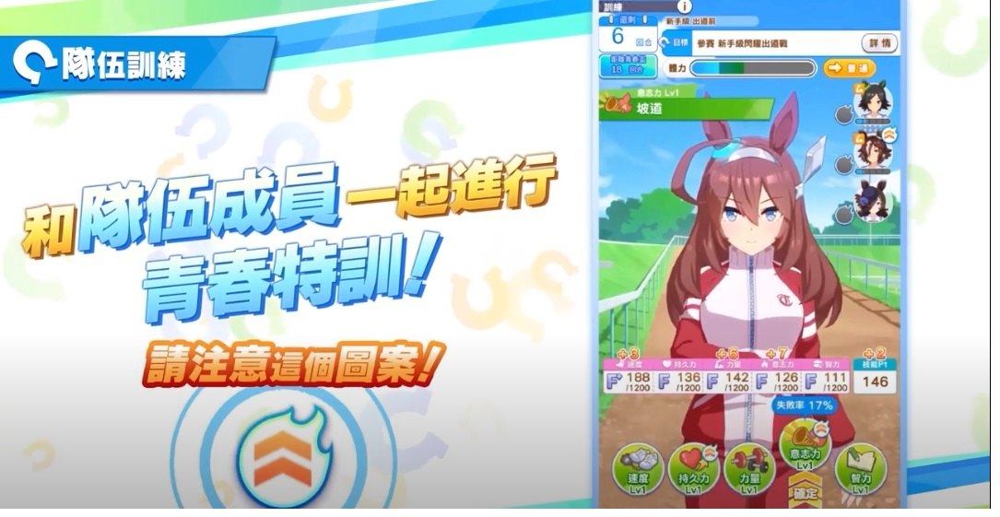

|  |
我們可以自由安排各種競賽，依據競賽的級別可以獲得20~100的pt，我們要在規定的回合數獲得相應的pt 來源: 官網影片 |
 |
|
我們在訓練的過程中，可以獲得五種表現力，可以消耗各種表現力來獲得額外的加成與訓練 來源: 官網影片 |
  | |
|  |
適合新手玩的劇本 來源: 官網影片 |
 |
|  |
在青春盃培育中，我們要以團隊來作戰，除了本身自己的訓練，我們也需要一起訓練同伴 來源: 官網影片 |
  |